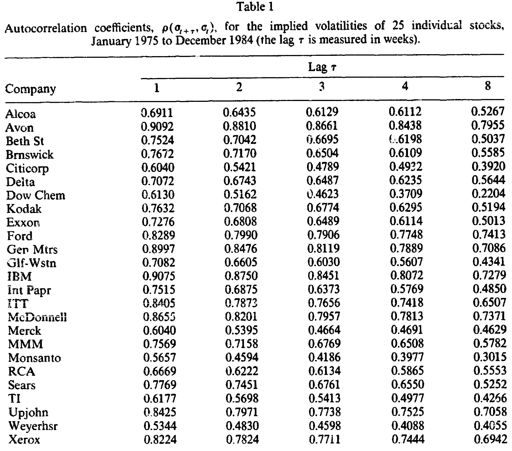
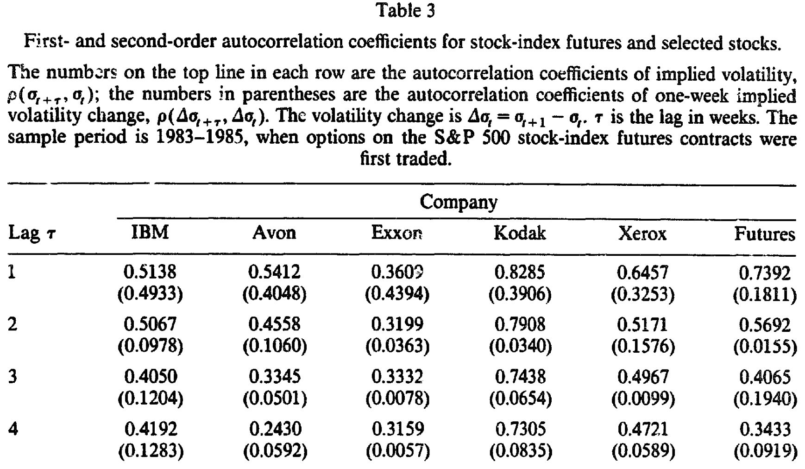
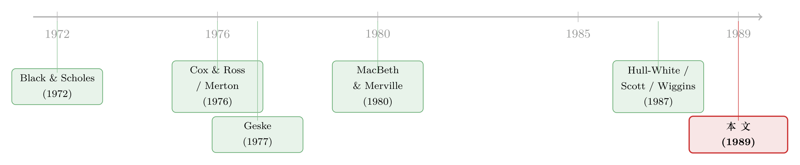

波动率不是一个数字，而是一根会被拽回家的弹簧
本文读的是 Merville & Pieptea (1989, JFE)：用 1975–1985 二十五只股票的周度看涨期权价格、外加 S&P 500 股指期货期权，作者把「隐含波动率」当成一条可以观测的样本路径来研究，发现它既不是常数、也不是纯随机游走，而是一个「会被拉回长期均值的扩散 + 一层离散噪声」的混合过程。强大的「弹性力」把波动率反复拽回它的长期值，而那层抹不掉的噪声，则给所有随机波动率期权模型留下了一道未解的题。
1 引言：那个被假设成常数的东西
任何学过期权定价的人，都背得出 Black-Scholes 公式里那五个输入：标的价格、行权价、到期时间、无风险利率，以及——波动率。前四个，你打开报价屏就能读到；唯独最后一个，是个看不见、摸不着、却又决定了期权值多少钱的幽灵。
而 Black 和 Scholes (1972) 当年为了把公式解出闭式，给这个幽灵下了一道最省事的假设：波动率是常数。整条推导的优雅，一半要归功于这个假设。可问题也恰恰出在这里——市场上的波动率，真的是一根纹丝不动的水平线吗？
只要你盯着真实的期权价格看上一阵，答案几乎是不言自明的：不是。于是过去半个世纪里，「如何描述会变的波动率」就成了期权定价绕不开的一条主线。Cox 和 Ross (1976) 让波动率随股价反向变动（常方差弹性模型，constant elasticity of variance, CEV），Merton (1976) 干脆在扩散里掺进跳跃，Geske (1977) 把股票看成公司资产上的期权、于是波动率随杠杆水涨船高。再往后，Hull、White、Scott、Wiggins 这一拨人，索性让波动率自己也服从一个随机过程。
这些模型一个比一个精巧。但本文作者却抛出了一个朴素到有点扎心的问题：
这些模型假设波动率「随机地、向均值回归地」运动——可有谁，真的拿数据去验证过这个假设？
这就是 Merville 和 Pieptea 这篇论文的全部张力所在。它不发明新的定价公式，它做一件更基础、也更少人愿意做的事：把波动率本身，当成一条可以观测、可以做时间序列分析的样本路径，看它到底长什么样。
2 一个巧妙的「代理」：把看不见的波动率读出来
要研究波动率的动态，第一步得先把它「测」出来。可波动率偏偏是那个唯一不可直接观测的量，怎么办？
作者的办法，是用隐含波动率（implied standard deviation, ISD）。逻辑很直接：假设 Black-Scholes 公式在每一个瞬间都是「对的」，那么把市场上真实成交的期权价格反代进去，求出那个让模型价格恰好等于市场价格的 \(\sigma\)，这个 \(\sigma\) 就是市场此刻心里认定的波动率。换句话说，期权价格本身，就是一台读取市场波动率预期的仪器。
这里有个微妙的麻烦：真实波动率是「股票自己的」属性，可隐含波动率却是「期权特定的」——同一只股票，不同行权价、不同到期日的期权，反推出来的 \(\sigma\) 并不完全一致。作者采用 Latané 和 Rendleman (1976) 的加权方案：给那些「对 \(\sigma\) 更敏感」的期权（即 \(\partial C/\partial \sigma\) 更大的）更高的权重，把一只股票当周所有期权的 ISD 揉成一个数。对深度价外、信息含量低的期权，权重自然就小。
为什么不用历史波动率（历史收益率的标准差）？因为历史估计是「向后看」的，波动率一旦在某个瞬间跳变，它要很久才反应过来。而隐含波动率能瞬间吸收市场预期的变化——研究波动率的动态，当然要用一把反应更快的尺子。Chiras 和 Manaster (1978) 早就证明，隐含波动率是比历史波动率更好的预测器。
数据这一头，作者下了血本：1975–1985 整整十年，25 只行业各异的股票（覆盖 24 个四位 SIC 码），每个周五收盘的全部看涨期权价格，超过 5 万个观测。为了不被「早行权」这件美式期权的脏事污染，他们用 Merton (1973) 的条件逐周筛查——只要某周的期权满足
$$PV(D(T)) < X(1 - P(T))$$
（剩余期内股利的现值，小于行权价乘以「到期日折现因子的补」），就可以放心假设不会被提前行权，否则该观测剔除。对股指期货期权，则改用 Whaley (1986) 的美式期货期权模型来求 ISD。
数据备齐，真正的好戏开始了。
3 核心一招：让自相关系数自己「招供」
作者手里现在有了 25 条波动率的样本路径。怎么从这堆数字里，看出波动率到底是「连续地漂移」还是「离散地跳动」？
他们用了一个极漂亮、也极朴素的工具：自相关系数（autocorrelation coefficient）。具体地，计算 \(\rho(\sigma_{t+\tau}, \sigma_t)\)——波动率在相隔 \(\tau\) 周时，自己和自己的相关性——然后让滞后 \(\tau\) 从 1 周一路缩到 8 周，看这个相关性怎么变。
结果干净得让人拍案。以 IBM 为例，自相关系数从 1 周滞后的 0.907，单调下降到 8 周滞后的 0.727；Avon 从 0.909 到 0.795；Exxon 从 0.727 到 0.501；Kodak 从 0.763 到 0.519；Xerox 从 0.822 到 0.694。所有 25 只股票，无一例外：滞后越短，相关性越高。

Table 1
这意味着什么？首先，没有任何一只股票能接受「不同时点的波动率互不相关」这个假设——波动率不是白噪声。而自相关随滞后缩短而显著上升这件事，正是「连续路径」的指纹：一个连续过程，相邻得越近，越像。 这就是扩散（diffusion）的证据。
但接着，一个自然的问题是：如果波动率真是一条完美连续的路径，那当滞后 \(\tau \to 0\) 时，自相关系数应该趋近于 1 才对。可数据偏偏不答应——Avon 的自相关再高也不超过 0.91，Exxon 不超过 0.73，Kodak 0.77，Xerox 0.83，IBM 0.91。作者不死心，把股指期货的滞后一路缩到一天，自相关系数也只爬到 0.75 上下，再也上不去了。
这道顶在 1 以下的天花板，就是「噪声」存在的铁证。 路径里有一部分跳动，无论你把时间窗口缩得多小，它都不会消失、也不会变得更连续。这是离散的、不可约的随机成分。
于是真正关键的一步出现了。作者再去看波动率变化量的自相关 \(\rho(\Delta\sigma_{t+\tau}, \Delta\sigma_t)\)，其中 \(\Delta\sigma_t = \sigma_{t+1} - \sigma_t\)。

Table 3
这里的图景反转得很巧妙：变化量的一阶（滞后 1 期）自相关系数落在 0.202 到 0.427 之间——明显为正；可只要滞后超过 1 期，绝大多数系数就骤降到 0.09 甚至以下。「变化量比水平值更接近独立」，这又是扩散成分的标志（一个标准扩散的增量是独立的）。而所有自相关系数全为正，说明变化的方向受当前水平制约——水平高了往下走、低了往上走——也就是说，漂移项是随水平变化的，存在一股把过程往回拉的力。
把这三条线索拼起来，一幅完整的画面浮现了：
- 波动率水平的自相关随滞后缩短而上升 → 有连续的扩散成分；
- 但自相关再高也够不到 1 → 叠着一层离散噪声；
- 变化量的自相关只在 1 期显著为正 → 扩散 + 一股向均值回归的弹性力。
更妙的是作者对「短期 vs 长期」的洞察。短样本期（1983–85）里，所有自相关都系统性地低于全样本期（表 3 对表 1）。为什么？因为短期里波动率的总体水平几乎不变，绝大多数变动都来自噪声；只有拉长到十年，波动率的总体水平才真正移动起来，扩散成分才压过噪声、显出连续性。 一句话——
把分析的窗口缩得足够小，趋势退场，噪声接管一切。
4 模型：一根会被拽回家的弹簧，加一层抖动
实证既然指向「扩散 + 噪声 + 均值回归」，作者顺势写下了一个新的波动率随机过程。记 \(t\) 时刻的波动率为 \(y\)，它满足如下随机微分方程（式 4）：
$$dy = f(y)\,dt + \sigma_D\,dz + \sigma_N\,dw$$
其中 \(dz \sim N(0, dt)\)，\(dw \sim N(0,1)\)。这个方程是全文的心脏，值得把每一块拆开来看：
漂移项 \(f(y)\) 刻画了「弹性力」。如果存在一个长期值 \(\theta\)，且有一股力把过程往它身上拉，那就该有 \(f(y) < 0\) 当 \(y > \theta\)、\(f(y) > 0\) 当 \(y < \theta\)。为了让参数可估，作者把漂移线性化（式 5）：
$$f(y) = \mu - k y$$
这里 \(\mu\) 是常数漂移，\(k\) 是弹性因子（elasticity factor）。\(k\) 越大，把过程拉回长期值的力就越强。而长期值本身，就藏在这两个参数的比里：
$$\theta = \mu / k$$
直觉很清楚：当 \(f(\theta) = 0\) 时过程无漂移，解得 \(\theta = \mu/k\)。若 \(k = 0\)，弹性力消失、长期值不复存在——过程退化成没有回归的随机游走。
而瞬时方差（式 6）则一语道破了「扩散」与「噪声」的分工：
$$\mathrm{var}(dy) = \sigma_D^2\, dt + \sigma_N^2$$
看这个式子最妙的地方：当时间窗口 \(dt\) 缩小，方差不会收敛到零，而是收敛到一个残余的、噪声相关的方差 \(\sigma_N^2\)。\(\sigma_D^2\) 是会随 \(dt\) 一起消失的扩散方差，\(\sigma_N^2\) 则是那块抹不掉的硬核——它正对应着第 3 节里自相关系数顶在 1 以下的那道天花板。
这个模型的好处，是它把两个经典过程都收编成了自己的特例：当 \(f(y) = \mu\) 且 \(\sigma_N = 0\)，它就是描述股价的几何布朗运动；当 \(\sigma_N^2 > 0\)、\(f(y) = 0\)（即 \(k=0\)）且 \(\sigma_D = 0\)，它就是纯白噪声。波动率，恰好活在这两者之间。（关于「所有扩散过程其实都能折回布朗运动」这条更宏大的线索，可参见《给期权定价换一把「万能钥匙」》。）
5 估计：用「离均差最小化」把弹性力量出来
连续时间过程没法直接观测，作者把式 (4) 换成它的有限差分形式（式 7）：
$$\Delta y = (\mu - k y)\Delta t + \sigma_D \Delta Z + \sigma_N \Delta W$$
接下来估 \(k\) 和 \(\mu\) 用的是离均差最小二乘（least-squares-deviation-from-mean）。令 \(\Delta y_i = y_{i+\Delta t} - y_i\)，则实际变动与理论均值变动之间的总平方偏差为（式 8）：
$$S(k, \mu) = \sum_{i=1}^{n} \big((\mu - k y_i)\Delta t - \Delta y_i\big)^2$$
对 \(\mu\)、\(k\) 各求偏导并令其为零，解这个二元线性系统，就得到无偏估计量（式 9、式 10）：
$$\hat{\mu} = \frac{(\sum y_i^2)(\sum \Delta y_i) - (\sum y_i)(\sum y_i \Delta y_i)}{n\Delta t(\sum y_i^2) - \Delta t(\sum y_i)^2}$$
$$\hat{k} = \frac{(\sum y_i)(\sum \Delta y_i) - n(\sum y_i \Delta y_i)}{n\Delta t(\sum y_i^2) - \Delta t(\sum y_i)^2}$$
取时间步长 \(\Delta t = 1\) 周，对 25 只股票和股指期货逐一估计。结果是：所有股票和期货的 \(\hat{k}\) 都偏高——意味着把波动率拽回长期值的弹性力很强；25 只股票的长期值 \(\theta = \mu/k\) 落在 0.21 到 0.41 之间，而股指期货的长期值只有 0.142。期货波动率更低这件事并不奇怪：一个股指本身就内含了巨大的分散化，把个股的特质波动抹平了一大截。
这里有一个常被忽略却很要紧的发现：波动率的变化是跨股票相关的，存在一个「全市场波动率效应」（marketwide volatility effect）。 作者用期货和五只代表股的相关分析佐证了这一点——波动率不只是各只股票自己的事，它有一个系统性的共同成分。这一点，正是后来「波动率作为一个被定价的系统性风险因子」整条文献的源头。
6 文献脉络：从「常数」到「随机」，再到「拿数据问一句真的吗」
把这篇论文放回它的坐标系，脉络就清晰了。
一切始于 Black 和 Scholes (1972) 的常数波动率假设——优雅，但与数据不符。于是第一波回应是让波动率「确定性地」变：Cox 和 Ross (1976) 的 CEV 让它随股价反向走，Merton (1976) 掺进跳跃，Geske (1977) 用复合期权给出「股价跌、杠杆升、波动率升」的经济学解释。实证这边，MacBeth 和 Merville (1980)、Beckers (1980) 都为「变方差」提供了证据。
第二波，是让波动率自己也成为一个随机过程。Johnson 和 Shanno (1987) 用蒙特卡洛模拟一个随机方差过程；建立在 Eisenberg (1985) 工作之上，Hull 和 White (1987)、Scott (1987)、Wiggins (1987) 各自给出了「股价与瞬时标准差双双服从随机过程」的期权定价模型。它们的分歧在于如何处理对冲组合中的波动率风险，以及股价与波动率之间的相关性——但它们有一个共同的软肋：都预设了波动率服从某种均值回归的随机过程，却谁也没拿实证去验证这个前提。

这篇 Merville-Pieptea (1989)，恰恰补上了这块缺口。它不与那些定价模型争高下，而是退一步，用十年期权数据去检验「均值回归 + 随机」这个被所有人当作前提的假设到底成不成立。结论是：均值回归对了，随机也对了，但还差一块——那层离散噪声，是此前所有模型都没写进去的。沿着这条线再往后走，「把看不见的波动率直接估出来、甚至直接称重」成了一整个研究纲领（可参见《把「看不见的波动率」变成一张可以直接称重的表》、《看不见的波动率，换一种「语言」就追到了》），而「波动率本身也是一种被定价的风险」更是延展出了一片天地（《「买了保险，注定亏钱」：从一份对冲组合里，读出波动率的负价格》）。
7 评论与延伸（Q&A + 研究方向）
(a) 几个可能的疑问
Q：用 Black-Scholes 反推隐含波动率，再去检验「BS 假设是错的」——这难道不是循环论证吗？
这是这篇论文最该被追问的一点。作者的辩护是「瞬时正确性假设」：在每一个时点上，BS 被当作瞬间正确的定价器，用来读出市场此刻的波动率预期；它并不要求 BS 在跨时间上成立。但说到底，提取出的 ISD 仍然带着 BS 的模型印记，若市场真用的是另一套定价核，读数就会有系统性偏差。这是「用模型测模型」的原罪，只能缓解、无法根除。
Q：自相关随滞后上升，凭什么就一定是「连续路径」，而不是别的统计假象？
严格说，自相关随滞后单调上升是连续扩散的必要而非充分特征；像高阶 AR 过程也能造出类似形状。作者的说服力，更多来自三条证据的合力——水平值自相关上升（连续性）、顶在 1 以下（噪声）、变化量只在 1 期相关（扩散+回归）——单看任何一条都不够硬，但三条同时成立，把「扩散+噪声+均值回归」这个组合逼了出来。
Q：那道「自相关顶在 1 以下」的天花板，会不会只是测量误差，而非真噪声？
这是一个诚实的担忧。ISD 本身有估计误差（期权特定误差、离散报价、买卖价差），这些都会在最短滞后处压低自相关。作者用加权方案和剔除薄市场期权来缓解，但无法完全排除「天花板的一部分其实是测量噪声」的可能。区分「经济噪声」与「测量噪声」，是这篇论文留下的一道真正的尾巴。
Q：长期值 θ = μ/k 在 0.21–0.41 之间，这个数字可信吗？
这是年化波动率的量级（21%–41%），对 1975–85 的个股而言完全合理。期货只有 14.2% 也符合直觉——指数的分散化抹平了特质波动。需要警惕的是，\(\hat\mu\) 和 \(\hat k\) 都依赖线性漂移 \(f(y)=\mu-ky\) 这个设定；若真实回归是非线性的，\(\theta\) 的点估计就会有偏（关于「漂移到底直不直」这桩公案，利率文献里争得更凶，见《利率会不会「拐弯」？》）。
Q：既然发现了「全市场波动率效应」，为什么不直接给波动率风险定个价？
因为这篇是纯粹的「过程刻画」论文，目标是描述波动率长什么样，而非问它的风险该值多少钱。把波动率共同成分翻译成一个被定价的因子，是后续十几年才逐步完成的工作。作者在这里只是诚实地指出了「它存在」，并把定价的活儿留给了别人。
Q：这个「扩散 + 噪声」模型，能直接拿去给期权定价吗？
不能，至少不能开箱即用。模型刻画的是波动率的物理测度动态；要定价还得引入风险中性测度下的波动率风险价格，而那层离散噪声让对冲组合无法完全消去波动率风险，市场是不完全的。作者自己也只是「建议发展新的期权定价模型」，而没有给出闭式解——这恰恰是它最诚实、也最让人意犹未尽的地方。
(b) 几个可能的研究问题与提案
1. 公司债隐含波动率里，有没有同样的「扩散 + 噪声」结构？
【经济故事】这篇论文做的是股票期权。但公司债的信用利差，本质上也是发行人资产价值上的一个期权（结构模型的视角），其隐含波动率同样不可直接观测。若信用市场的波动率也呈现「强均值回归 + 离散噪声 + 全市场共同成分」，那对信用衍生品定价和危机传染的刻画都有直接含义。 【可行性】中。所需数据：CDS 或公司债期权的隐含波动率序列（可得性远不如股票期权，且流动性更差，噪声成分天然更大——这本身可能就是结果）。识别上可直接照搬本文的自相关分解法，doable，但样本期和标的覆盖会是硬约束。
2. 那道「噪声天花板」里，有多少是经济噪声、多少是测量误差？
【经济故事】本文最大的未决问题，就是无法干净地区分「不可约的经济噪声」和「ISD 估计误差」。如果能用更高频的日内期权数据、或用无模型隐含波动率（model-free implied volatility）替换 BS-ISD，看天花板是否随测量精度提升而升高，就能给这两者称重。 【可行性】中高。所需数据：日内期权报价（OptionMetrics / 交易所 tick 数据）。识别策略：比较不同测量方法下最短滞后自相关的上限——若换更干净的尺子天花板就抬高，说明相当一部分是测量噪声；若纹丝不动，则是真噪声。这是一个设计清晰、可证伪的检验。
3. 外资持有人占比，会不会改变一只股票波动率的均值回归速度 k？
【经济故事】如果外资是「追涨且赖着不走」的（这一点已有大量证据，见《外资真是「蝗虫」吗？》），他们的持有可能改变波动率冲击被吸收的速度，从而改变弹性因子 \(k\)。一个更「黏」的投资者基础，或许对应更慢的均值回归。 【可行性】中。所需数据：个股层面的外资持股比例（如新兴市场的「可投资度」FTSE/MSCI 投资度因子）+ 隐含波动率序列。识别上可用指数纳入或外资开放事件做准自然实验，估计开放前后 \(\hat k\) 的变化。难点在于外资比例的内生性，需要一个干净的外生冲击。
4. 长期值 θ 的跨股票差异，能被什么基本面解释？
【经济故事】本文给出了 25 个 \(\theta\) 值（0.21–0.41）却没解释「为什么 A 股票的长期波动率比 B 高」。把 \(\theta\) 对杠杆、行业、规模、资产有形性做横截面回归，能把「波动率的长期锚」与公司基本面挂钩——这是 Christie (1982) 杠杆假说的一个自然延伸。 【可行性】高。所需数据：本文已有的 \(\theta\) 估计 + Compustat 基本面。纯横截面回归，doable，唯一的限制是 25 个观测样本太小，统计功效有限——但作为一个探索性的描述性研究完全成立。
5. 「全市场波动率效应」能不能构造成一个可交易的因子？
【经济故事】作者发现波动率变化跨股票相关、存在系统成分。若把这个共同波动率成分提取出来（比如做主成分），它会不会是一个被定价的风险因子，解释横截面收益？这正是后来 VIX、波动率风险溢价文献的雏形。 【可行性】高。所需数据：一篮子个股隐含波动率（OptionMetrics 现成）。识别策略：PCA 提取共同波动率成分，构造模仿组合，做 Fama-MacBeth 横截面定价检验。这是一个标准且成熟的设计，唯一需要诚实交代的是：这条路后来已被走得很透，新意要靠更细的切口（如分行业、分信用等级）。
8 我的判断
这篇论文的贡献，不在于它提出了一个多漂亮的定价公式——它恰恰没有给出闭式解。它的价值在于方法论上的一次退步与诚实：当整个学界都在比赛谁的随机波动率模型更精巧时，它退一步，去问「我们共同假设的那个前提，数据答应吗」。答案是：均值回归成立、随机成立，但还多出一块谁都没写进去的离散噪声。把「噪声」和「扩散」用自相关系数的不同行为干净地分离开，是这篇论文最漂亮的一招。
对识别，我有三点保留。其一是绕不开的循环：用 BS 反推 ISD，再去否定 BS 的假设，提取出的波动率必然带着模型印记。其二是那道「天花板」的归因——它有多少是真噪声、多少是 ISD 的测量误差，作者没能、也很难彻底厘清，而这恰恰是全文最核心的发现，地基有点软。其三是线性漂移 \(f(y)=\mu-ky\) 的设定，若真实回归是非线性的，\(k\) 和 \(\theta\) 的估计都会有偏，而 25 个观测的样本量又限制了把设定放松后的检验功效。
后续我最想看到的，是用今天的无模型隐含波动率和日内数据，把这篇 1989 年的检验重做一遍：那道天花板还在吗？它随测量精度提升而抬高吗？如果抬高，说明当年看到的「噪声」有相当一部分是尺子的问题；如果纹丝不动，那才是一块真正不可约的、值得所有期权模型严肃对待的硬核。三十多年过去，这个问题其实仍未被干净地回答——这恰恰说明，一篇好的「描述性」论文，能把一个问题问得多么经久。
参考文献
Black, F., & Scholes, M. (1972). The valuation of option contracts and a test of market efficiency. Journal of Finance 27(2), 339–417.
Beckers, S. (1980). The constant elasticity of variance model and its implications for option pricing. Journal of Finance 35(3), 661–673.
Chiras, D. P., & Manaster, S. (1978). The information content of option prices and a test of market efficiency. Journal of Financial Economics 6(2–3), 213–234.
Christie, A. A. (1982). The stochastic behavior of common stock variances: Value, leverage and interest rate effects. Journal of Financial Economics 10(4), 407–432.
Cox, J. C., & Ross, S. A. (1976). The valuation of options for alternative stochastic processes. Journal of Financial Economics 3(1–2), 145–166.
Geske, R. (1977). The valuation of corporate liabilities as compound options. Journal of Financial and Quantitative Analysis 12(4), 541–552.
Hull, J., & White, A. (1987). The pricing of options on assets with stochastic volatilities. Journal of Finance 42(2), 281–300.
Johnson, H., & Shanno, D. (1987). Option pricing when the variance is changing. Journal of Financial and Quantitative Analysis 22(2), 143–151.
Latané, H. A., & Rendleman, R. J., Jr. (1976). Standard deviation of stock price ratios implied in option pricing formula. Journal of Finance 31(2), 369–381.
MacBeth, J. D., & Merville, L. J. (1980). Tests of the Black-Scholes and Cox call option pricing models. Journal of Finance 35(2), 285–303.
Merton, R. (1973). Theory of rational option pricing. Bell Journal of Economics and Management Science 4(1), 141–183.
Merton, R. (1976). Option pricing when underlying stock returns are discontinuous. Journal of Financial Economics 3(1–2), 125–144.
Merville, L. J., & Pieptea, D. R. (1989). Stock-price volatility, mean-reverting diffusion, and noise. Journal of Financial Economics 24(1), 193–214.
Scott, L. O. (1987). Option pricing when the variance changes randomly: Theory, estimation, and an application. Journal of Financial and Quantitative Analysis 22(4), 419–438.
Whaley, R. E. (1986). Valuation of American futures options: Theory and empirical tests. Journal of Finance 41(1), 127–150.
Wiggins, J. B. (1987). Option values under stochastic volatility: Theory and empirical estimates. Journal of Financial Economics 19(2), 351–372.